Loading ...
|
5-4-1
|
Tunisia | 1 | - | 3 | Netherlands |
4-3-3
|
| HT 0-2 | ||||||
|
FIFA World CupFriday 26 June 2026
|
||||||
- Venue
- Kansas City Stadium
- Attendance
- 68,391
- Referee
- Katia Itzel García Mendoza
Goal54'
H. Mastouri
Assist: H. Mejbri
Substitution67'
R. Khedira
H. Mahmoud
- 2
Substitution68'
A. Ben Slimane
E. Achouri
M. Ben Hmida
M. Ben Ouanes
Substitution75'
I. Gharbi
F. Chaouat
Substitution90'
H. Mastouri
S. Tounekti
Whistle45+4'
45+4'
Own goal3'
E. Skhiri
Goal7'
B. Brobbey
Assist: V. van Dijk
Goal62'
J. van Hecke
Assist: T. Reijnders
- 3
Substitution72'
F. de Jong
T. Koopmeiners
T. Reijnders
J. Kluivert
D. Malen
C. Summerville
Substitution77'
B. Brobbey
M. Depay
Substitution84'
C. Gakpo
N. Lang
Tunisia | |
|---|---|
Goalkeeper | |
| 16 | A. Dahmen |
Defender | |
| 2 | A. Abdi |
| 3 | M. Talbi |
| 17 | E. Skhiri 3' |
| 20 | Y. Valery |
| 21 | M. Ben Hmida 68' |
Midfielder | |
| 10 | H. Mejbri |
| 11 | I. Gharbi 75' |
| 13 | R. Khedira 67' |
| 25 | A. Ben Slimane 68' |
Forward | |
| 9 | H. Mastouri 54'90' |
Substitutes | |
| 7 | E. Achouri 68' |
| 12 | M. Ben Ouanes 68' |
| 15 | H. Mahmoud 67' |
| 19 | F. Chaouat 75' |
| 26 | S. Tounekti 90' |
Netherlands | |
Goalkeeper | |
| 1 | B. Verbruggen |
Defender | |
| 4 | V. van Dijk |
| 5 | N. Aké |
| 6 | J. van Hecke 62' |
| 22 | D. Dumfries |
Midfielder | |
| 8 | R. Gravenberch |
| 14 | T. Reijnders 72' |
| 21 | F. de Jong 72' |
Forward | |
| 11 | C. Gakpo 84' |
| 18 | D. Malen 72' |
| 19 | B. Brobbey 7'77' |
Substitutes | |
| 7 | J. Kluivert 72' |
| 10 | M. Depay 77' |
| 17 | N. Lang 84' |
| 20 | T. Koopmeiners 72' |
| 24 | C. Summerville 72' |


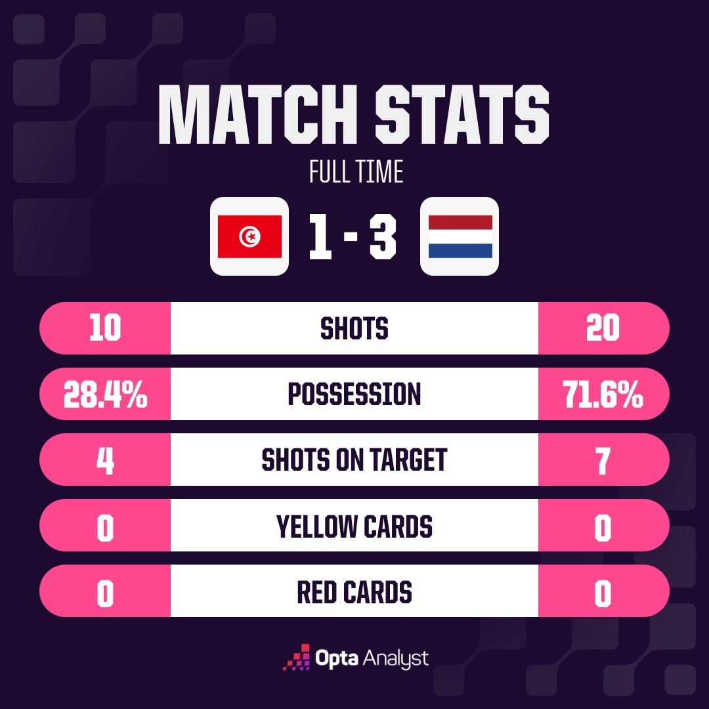
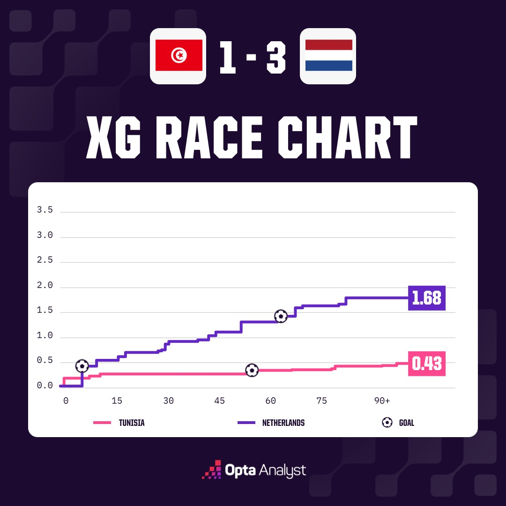
97'
Netherlands are undefeated in their last 15 games in the FIFA World Cup, their longest unbeaten streak in the competition (since at least 1965/1966).
97'
Tunisia have lost their last 3 games in the FIFA World Cup, their last longer losing streak was from 19th June 2006 to 23rd June 2018, a run of 4 games.
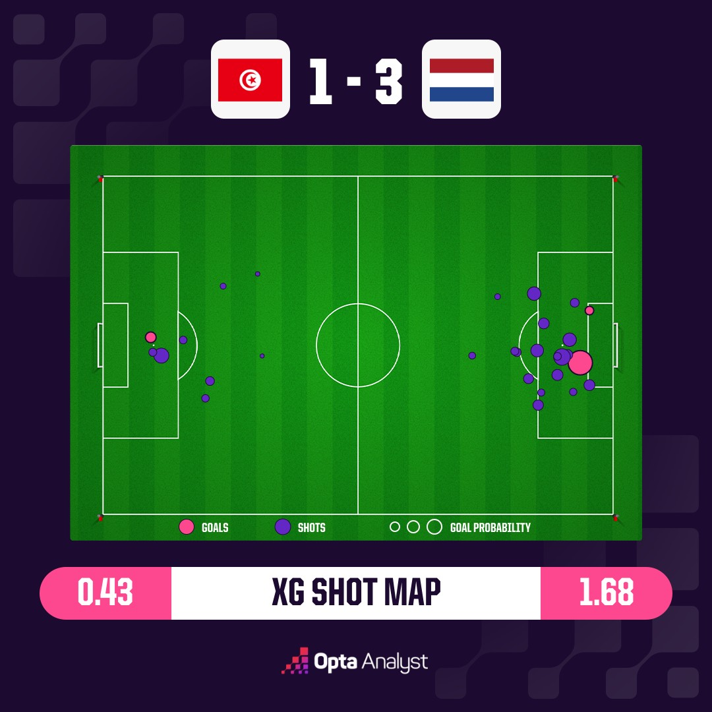
90+6'
FULL-TIME! That’s it for this game, as the referee blows the final whistle, with Netherlands getting the better of Tunisia 1-3.
90+5'
Netherlands have had plenty of the ball in the last 15 minutes, with 73.97% possession compared to just 26.03% for their opponents. However, there has not been any shot to come from that possessional dominance, which will be a huge frustration for their coach.
90+4'
Netherlands have had plenty of the ball in the last 15 minutes, with 73.91% possession compared to just 26.09 % for their opponents. However, there’s not been any goal to come from that possessional dominance just yet.
90+1'
A substitution for Tunisia sees Hazem Mastouri replaced by Sebastian Tounekti. There does not appear to be any obvious sign of an injury, so that is a tactical switch.
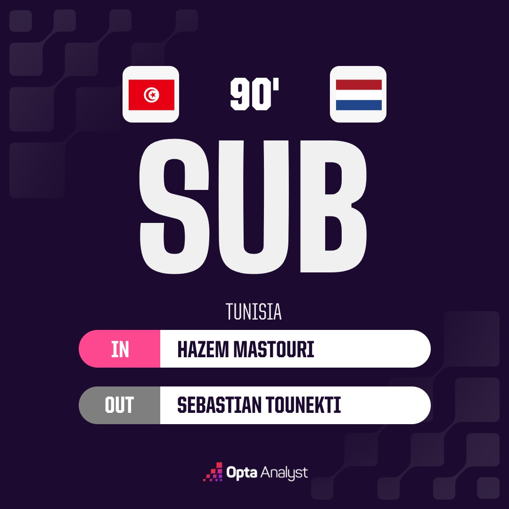
90+1'
MISS! The score remains 1-3, with Netherlands relieved after Tunisia’s Hazem Mastouri goes for goal but sends their attempt off target. Not one to write home about, that one.
89'
Pure professionalism from Netherlands in these closing stages - keeping the ball for fun with another 20+ pass move. Tunisia can't get near them as the clock ticks down.
88'
Still behind, but Tunisia are refusing to roll over - defensive urgency rising as they fend off more pressure and push for a late turnaround.
84'
A free-kick to Netherlands, as Firas Chaouat goes in and fouls Nathan Aké. However, Tunisia will not mind giving one away in this area too much, with plenty of distance to their goal.
84'
It's all hands on deck for Netherlands as they defend their lead, making a wave of critical blocks and clearances
84'
Substitution! Noa Lang replaces Cody Gakpo for Netherlands as the manager shuffles the pack. Can Noa Lang make an impression as this match continues?
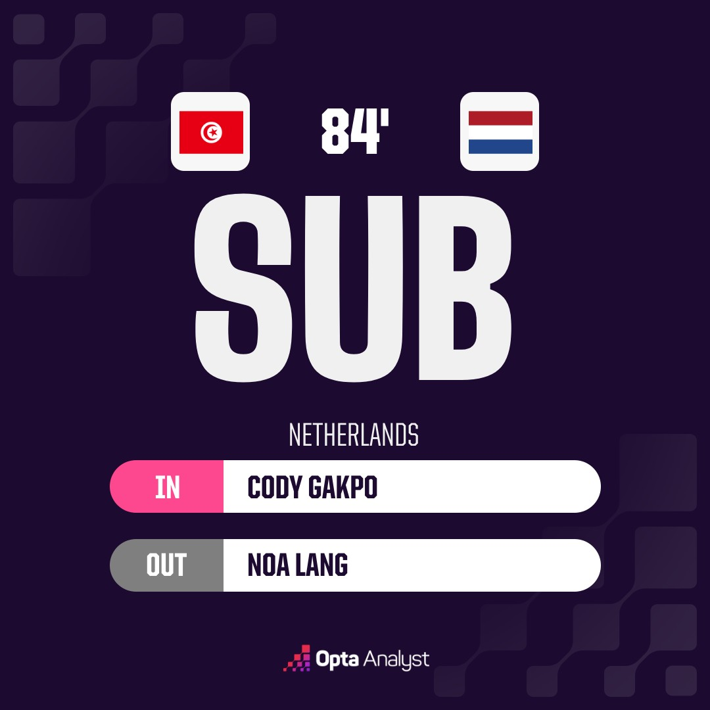
83'
A free-kick to Tunisia, as Nathan Aké goes in and fouls Hannibal Mejbri. However, Netherlands will not mind giving one away in this area too much, with plenty of distance to their goal.
81'
Firas Chaouat makes a run in behind but the Netherlands defensive line were alert, and stepped up in time to catch them offside. That run just needed to be timed better.
80'
MISS! A shot from Nathan Aké ends up being off target. They might have done a bit better with that one, but it remains Netherlands 3-1 Tunisia.
79'
Corner after corner for Tunisia - Netherlands are being forced deeper as the pressure ramps up.
79'
Can Netherlands make this chance count? They have won a free-kick in a threatening position after a foul from Hadj Mahmoud on Justin Kluivert. Will Tunisia's defence be tested here?
79'
A free-kick to Netherlands, as Hadj Mahmoud goes in and fouls Nathan Aké. However, Tunisia will not mind giving one away in this area too much, with plenty of distance to their goal.
78'
SHOT! Virgil van Dijk manages to get a shot off from inside the area, but although it was heading in, they cannot get enough on it to beat Aymen Dahmen, who makes the save.
78'
In the last 15 minutes, it is Netherlands who have dominated the ball, having seen 66.67% of the possession, yet they have not been able to go and turn that into a goal just yet, with their opponents standing firm.
78'
A free-kick in a dangerous position now for Netherlands, after a foul from Hazem Mastouri on Justin Kluivert. Can Netherlands make Tunisia pay for that rashness from Hazem Mastouri?
77'
Netherlands are making a tactical change. Brian Brobbey is leaving the field and in their place comes Memphis Depay – we will soon see if this switch has the desired impact.
77'
No luck! Elias Achouri takes on a shot that, had they got it right, might have been set to test the goalkeeper, but instead it is sent off target and Netherlands come away unscathed.
76'
Corner now for Tunisia, as they see a shot from Hannibal Mejbri deflected out of play for a set-piece. Netherlands have some defending to do, here. Could this result in a big opportunity?
76'
Entering the final stages of this contest, let’s check on the possession stats for each team. It is Netherlands who have had the more of the ball, with 71.10%, while Tunisia have had to settle for 28.90%. The score is 3-1.
75'
Substitution! Firas Chaouat replaces Ismaël Gharbi for Tunisia as the manager shuffles the pack. Can Firas Chaouat make an impression as this match continues?
74'
Teun Koopmeiners goes in on Hannibal Mejbri and concedes a foul. The free-kick is not in a particularly dangerous area from Netherlands’s viewpoint, though.
74'
A rash challenge from Ryan Gravenberch, who sends Mortadha Ben Ouanes tumbling, giving Tunisia a free-kick. It is not in a threatening position, but it gives them a chance to get back on the ball.
72'
Substitution! Crysencio Summerville replaces Donyell Malen for Netherlands as the manager shuffles the pack. Can Crysencio Summerville make an impression as this match continues?
72'
Substitution! Justin Kluivert replaces Tijjani Reijnders for Netherlands as the manager shuffles the pack. Can Justin Kluivert make an impression as this match continues?
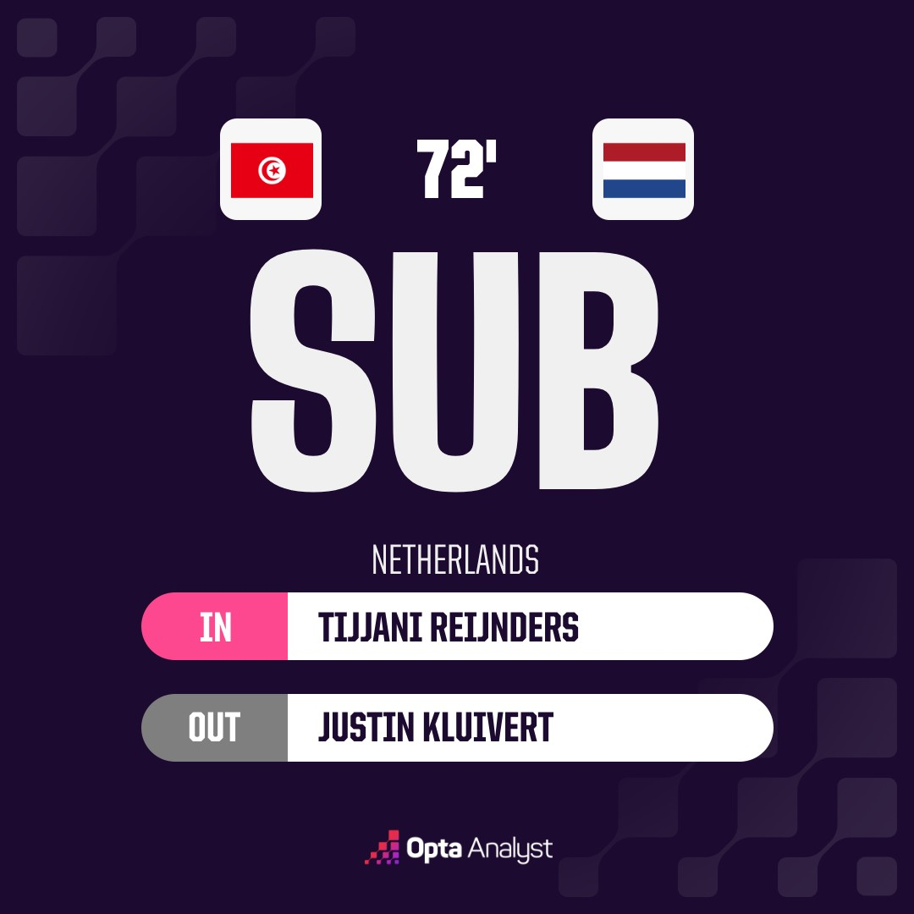
72'
Netherlands are making a tactical change. Frenkie de Jong is leaving the field and in their place comes Teun Koopmeiners – we will soon see if this switch has the desired impact.
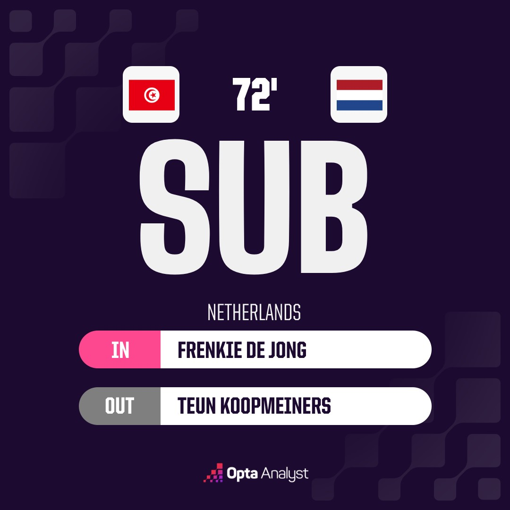
68'
Save! A long-range strike from Tijjani Reijnders was heading in, but Aymen Dahmen got to it to parry it away from danger.
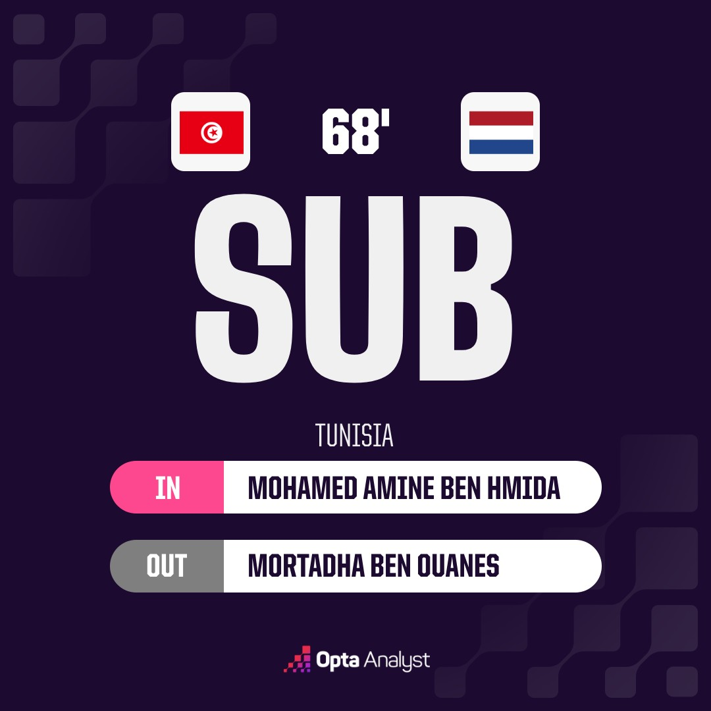
68'
A substitution for Tunisia sees Mohamed Ben Hmida replaced by Mortadha Ben Ouanes. There does not appear to be any obvious sign of an injury, so that is a tactical switch.
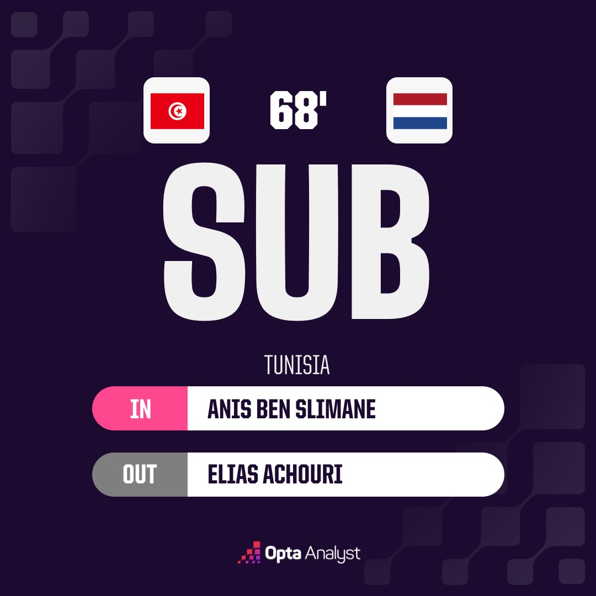
68'
Tunisia are making a tactical change. Anis Ben Slimane is leaving the field and in their place comes Elias Achouri – we will soon see if this switch has the desired impact.
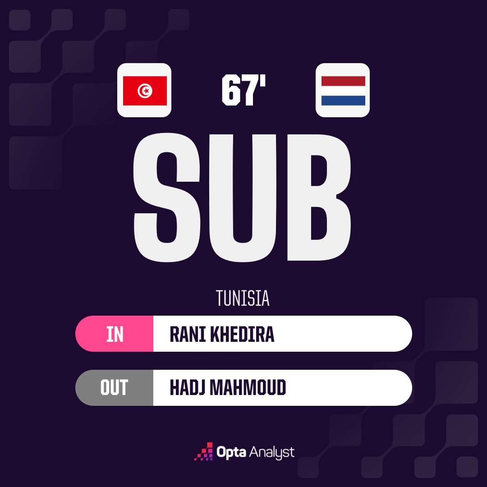
67'
The Tunisia manager is looking to the substitutes’ bench, bringing on Hadj Mahmoud in place of Rani Khedira. Will the change make a difference? Let’s find out!
66'
That is a disappointing effort from Denzel Dumfries, who went for glory but got their attempt wrong, and the shot sailed off target. A frustrating moment for Netherlands.
66'
This match is into the last 25 minutes now, and before it goes into the final stages, let’s check on the shots. There have been 21 in total – 15 from Netherlands, and 6 from Tunisia. Of those attempts, 8 have hit the target – 5 from Netherlands and 3 from Tunisia.
65'
SAVE! A shot from outside the box by Tunisia Hazem Mastouri was heading in, but Netherlands Bart Verbruggen keeps it out with a smart stop.
65'
Mohamed Ben Hmida goes in on Frenkie de Jong and concedes a foul. The free-kick is not in a particularly dangerous area from Tunisia’s viewpoint, though.
62'
Tijjani Reijnders has assisted his first goal in the 2026 FIFA World Cup.
62'
Jan van Hecke has scored his first goal in the 2026 FIFA World Cup.
62'
Is that game over? Netherlands are now well ahead, having extended their lead to 2 goals thanks to Jan van Hecke’s effort. It’s now 3-1, and Tunisia face an uphill battle to get back into it.
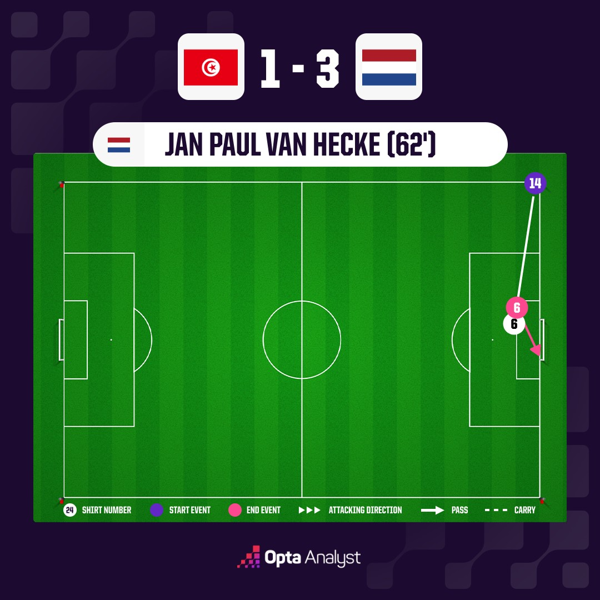
61'
Still behind, but Tunisia are refusing to roll over - defensive urgency rising as they fend off more pressure and push for a late turnaround.
61'
BLOCK! An intervention from Ellyes Skhiri might have just prevented a goal, with the defending player getting in the way of an attempt from Cody Gakpo. Solid defending there!
59'
A free-kick to Netherlands, as Rani Khedira goes in and fouls Donyell Malen. However, Tunisia will not mind giving one away in this area too much, with plenty of distance to their goal.
59'
A free-kick to Tunisia, as Jan van Hecke goes in and fouls Hannibal Mejbri. However, Netherlands will not mind giving one away in this area too much, with plenty of distance to their goal.
58'
Textbook game management from Netherlands after the break. They're stroking the ball around with confidence, making Tunisia work for every touch while protecting that precious lead.
54'
Hannibal Mejbri has assisted his second goal in the 2026 FIFA World Cup.
54'
Hazem Mastouri has scored his first goal in the 2026 FIFA World Cup.
54'
GOAL! Game on! Tunisia are back in this, with Hazem Mastouri's goal having cut the deficit down to one goal. Can they go on to find a dramatic equaliser?
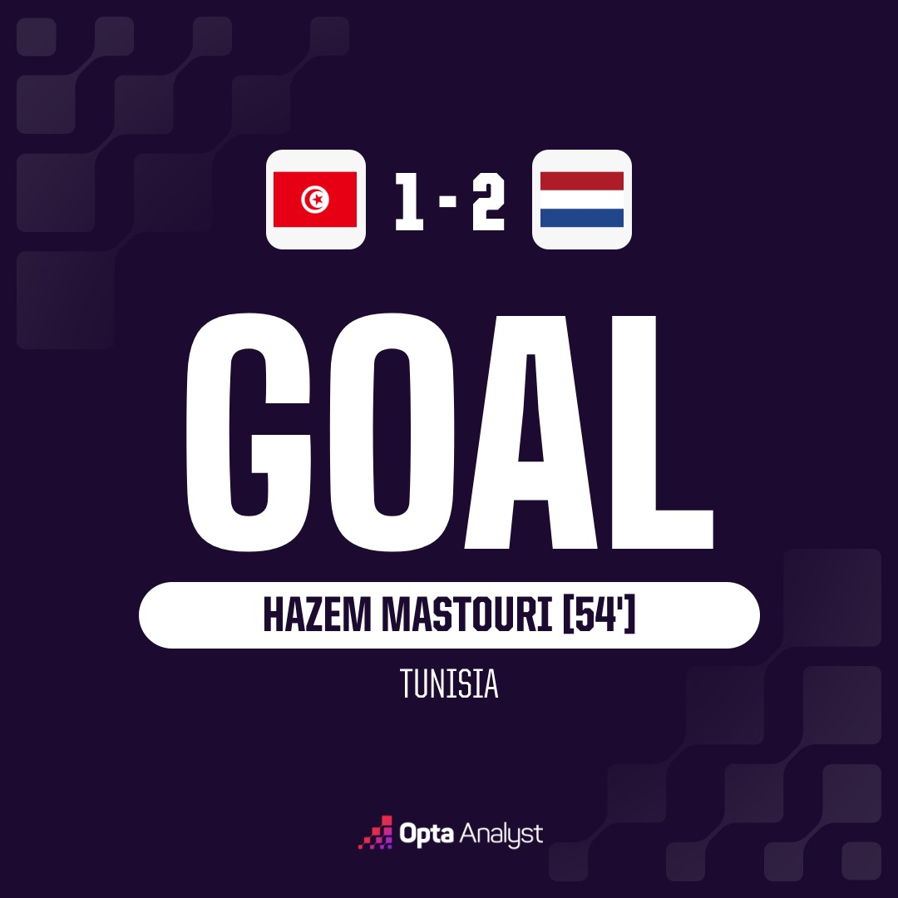
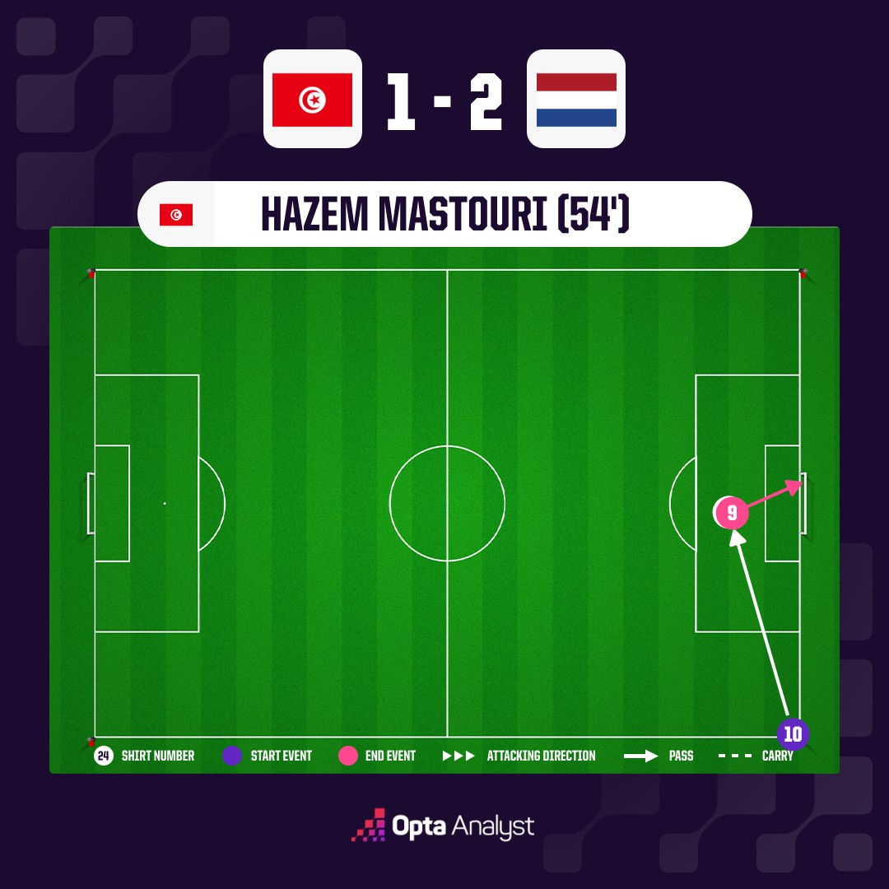
52'
There is plenty of possession for Netherlands, with 74.59% compared to Tunisia 25.41 % in the last 15 minutes. However, Netherlands have not been able to turn that dominance of the ball into a goal.
51'
A rash challenge from Jan van Hecke, who sends Hazem Mastouri tumbling, giving Tunisia a free-kick. It is not in a threatening position, but it gives them a chance to get back on the ball.
51'
BLOCKED, AND A CERTAIN GOAL SAVED! Denzel Dumfries's effort was heading in, but on the line, a player is perfectly placed to make a vital clearance. Fantastic defending from the Tunisia player.
49'
A rash challenge from Virgil van Dijk, who sends Hazem Mastouri tumbling, giving Tunisia a free-kick. It is not in a threatening position, but it gives them a chance to get back on the ball.
47'
The Tunisia defence steps up in time and there is a frustration for Cody Gakpo, who thought they were through until the flag goes up to signal offside.
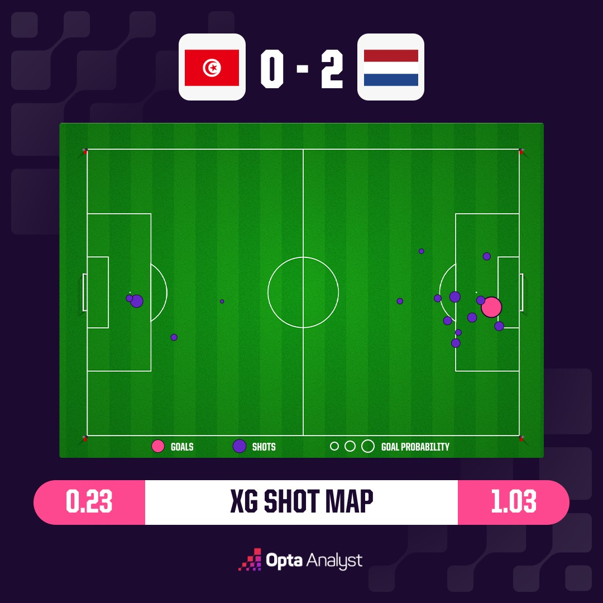
45+4'
Half-time! We reach the interval at Kansas City Stadium and it is Netherlands who have a 0-2 lead over Tunisia. Can they hold on and see this out in the second half?
44'
Offside! Yan Valery thought they were through on goal, but the Netherlands defence stepped up in time to catch them offside, and the assistant referee puts their flag up.
44'
CLOSE! Denzel Dumfries gets into a decent shooting position inside the Tunisia area, and manages to find space to get an effort off. However, Aymen Dahmen is equal to it.
42'
BLOCKED! That was close. Brian Brobbey got off a shot, which was heading in, but Ellyes Skhiri was on hand to make a vital intervention. Great block!
39'
MISS! The score remains 2-0, with Tunisia relieved after Netherlands’s Ryan Gravenberch goes for goal but sends their attempt off target. Not one to write home about, that one.
39'
Despite trailing, Tunisia are showing real defensive grit, digging in and stopping further damage as they try to build a platform.
38'
A foul from Mohamed Ben Hmida on Ryan Gravenberch sees Netherlands win a free-kick, but it is not in a dangerous position, so Tunisia should be confident they can defend it easily enough.
37'
Netherlands are having plenty of the ball, with 66.67% possession in the last 15 minutes. However, they have been unable to transfer that possessional dominance into a goal during that period.
34'
A free-kick to Tunisia, as Frenkie de Jong goes in and fouls Hannibal Mejbri. However, Netherlands will not mind giving one away in this area too much, with plenty of distance to their goal.
33'
Despite trailing, Tunisia are showing real defensive grit, digging in and stopping further damage as they try to build a platform.
32'
That is a disappointing effort from Ismaël Gharbi, who went for glory but got their attempt wrong, and the shot sailed off target. A frustrating moment for Tunisia.
32'
A rash challenge from Ryan Gravenberch, who sends Hannibal Mejbri tumbling, giving Tunisia a free-kick. It is not in a threatening position, but it gives them a chance to get back on the ball.
31'
No luck! Donyell Malen takes on a shot that, had they got it right, might have been set to test the goalkeeper, but instead it is sent off target and Tunisia come away unscathed.
30'
Denzel Dumfries's effort is deflected out for a corner. Can Netherlands make anything of this set-piece?
30'
Foul! A free-kick now in a dangerous area for Netherlands, after Virgil van Dijk is fouled by Hazem Mastouri. Can Netherlands make the most of this opportunity?
30'
No luck! Cody Gakpo takes on a shot that, had they got it right, might have been set to test the goalkeeper, but instead it is sent off target and Tunisia come away unscathed.
29'
No luck! Donyell Malen takes on a shot that, had they got it right, might have been set to test the goalkeeper, but instead it is sent off target and Tunisia come away unscathed.
28'
CORNER! The pressure is building for Netherlands as they win a set-piece after Ryan Gravenberch's attempt is blocked by Mohamed Ben Hmida and diverted out of play.
27'
Free-kick! A foul from Brian Brobbey on Ellyes Skhiri. It is well away from Netherlands’s goal, so it is unlikely to result in a chance for Tunisia.
22'
Netherlands are having plenty of the ball, with 66.67% possession in the last 15 minutes. However, they have been unable to transfer that possessional dominance into a goal during that period.
19'
Oh no! That should have been in! Tijjani Reijnders was through but could not keep their composure when it mattered most. Netherlands still lead, but they have not been able to extend it. Will that be the good fortune Tunisia need?
17'
MISS! A shot from Jan van Hecke ends up being off target. They might have done a bit better with that one, but it remains Netherlands 2-0 Tunisia.
16'
Good play from Tijjani Reijnders, who draws a foul from Mohamed Ben Hmida to hand Netherlands a free-kick in a dangerous position. Will they create something from this set-piece?
15'
Tunisia may be behind, but they’re battling hard defensively to stop the gap from widening. A gritty response at the back.
12'
Tunisia need a goal fast to get back into this game, but they will not get one with finishing like that! Anis Ben Slimane was in a great position, but could not apply the finish.
11'
That might have been going in! A fantastic block from Montassar Talbi, who gets in the way of a goal-bound effort from Frenkie de Jong. Would the goalkeeper have been beaten? We will never know.
9'
Can Netherlands make this chance count? They have won a free-kick in a threatening position after a foul from Hannibal Mejbri on Denzel Dumfries. Will Tunisia's defence be tested here?
9'
MISS! The score remains 0-2, with Netherlands relieved after Tunisia’s Ali Abdi goes for goal but sends their attempt off target. Not one to write home about, that one.
7'
Virgil van Dijk has assisted his first goal in the 2026 FIFA World Cup.
7'
Brian Brobbey has scored his third goal of the 2025 FIFA World Cup this edition, more than any other Netherlands player.
7'
GOAL! It is 2-0 to Netherlands now, with Brian Brobbey having put them will in control. Is there any way back for Tunisia, or will Netherlands see this one out with ease?
6'
Foul! A free-kick now in a dangerous area for Netherlands, after Donyell Malen is fouled by Rani Khedira. Can Netherlands make the most of this opportunity?
3'
Netherlands have avoided defeat in their last 25 matches when scoring first in the FIFA World Cup, since a 2-3 loss to Scotland on 11th June 1978.
3'
Goal! Oh, and it is an own goal from Ellyes Skhiri! A huge slice of bad luck for Tunisia, but Netherlands will not care. They lead 1-0 and will now hope to push on!
2'
MISS! The score remains 0-0, with Netherlands relieved after Tunisia’s Ismaël Gharbi goes for goal but sends their attempt off target. Not one to write home about, that one.
1'
And we are off! Strap in, folks, for this mouthwatering encounter between Netherlands and Tunisia at Kansas City Stadium.
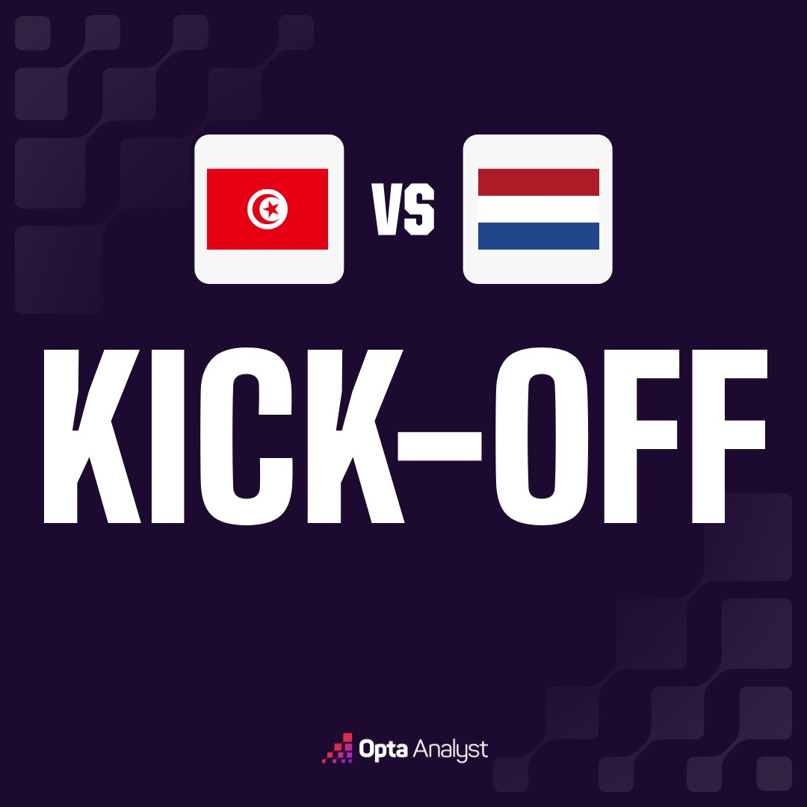
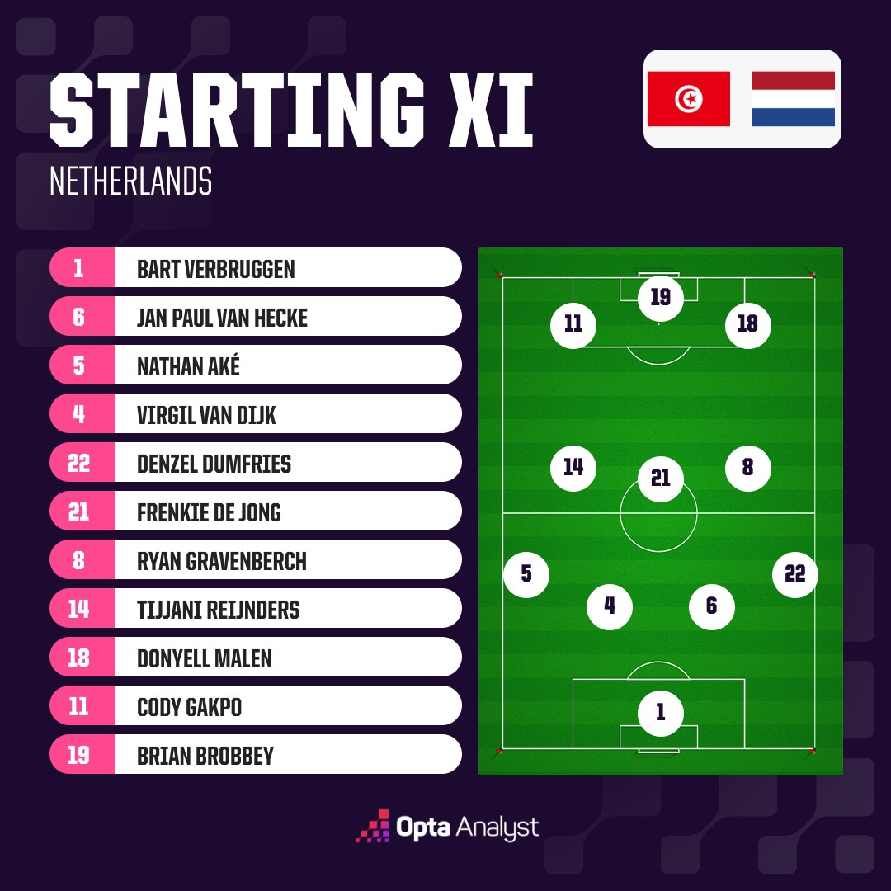
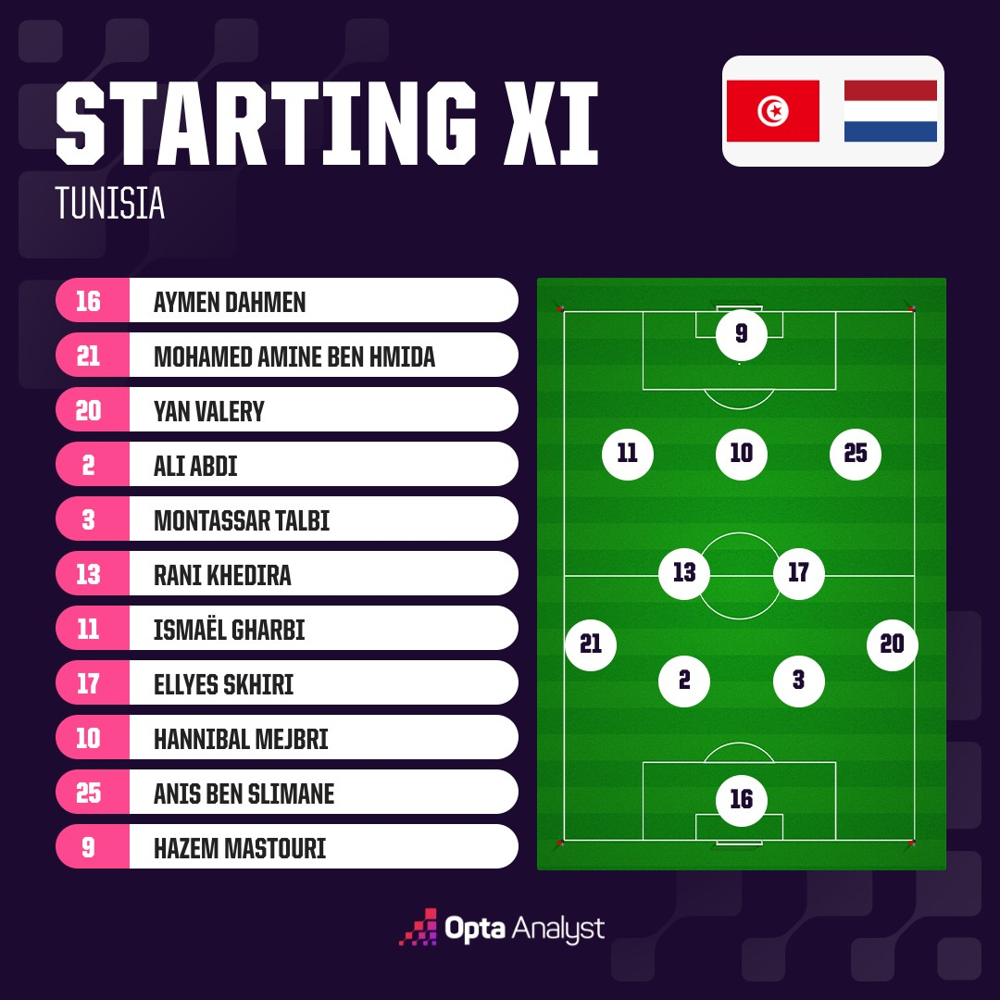
Tunisia face the Netherlands for a FIFA World Cup group stage match at Kansas City Stadium on Thursday with the Dutch side looking to clinch a place in the Round of 32.
Tunisia suffered a 4-0 defeat in their last group stage match against Japan on June 20. They are winless in their last five games in all competitions. In seven games this year, they have one win, one draw, and five losses.
The Netherlands' last group stage game saw them triumph for the first time in the competition this year, winning 5-1 over Sweden on June 20 at Houston Stadium, extending their unbeaten streak to three. Brian Brobbey and Cody Gakpo netted two each to lead the scoring. In 2026, they have won three, drawn two, and lost one.
The Netherlands are top of the group on four points, while Tunisia's zero points place them fourth. The Netherlands are currently in line for the Round of 32, while Tunisia are facing elimination.
With four points, Japan are second in the group, well-positioned to advance to the Round of 32. Sweden are still in contention for a round of 32 place, sitting third on three points.
The sides played out a 1-1 draw in their previous meeting in February 2009.
Omar Rekik has caught the eye for Tunisia in World Cup play. The defender leads the team with one goal. The Netherlands have been led by Gakpo, Brobbey, and Crysencio Summerville, who have each netted twice in the current World Cup campaign.
In their last six matches in all competitions, Tunisia have won one, drawn one and lost four. The Tunisian side scored two and conceded 15 over that stretch, scoring first in one of the six contests. They had two first-half goals, while their opponents netted five times in the first 45 minutes. Netherlands have won three, drawn two and lost one in their last six. The Dutch side scored 12 and conceded seven over that stretch, netting first in four of the six. They had five goals in the first half, while their opponents netted two times before the break.
-
General
Possession 28.6% 28.60171.39971.4% Possession lost in defensive half 48 4822 Possession lost in middle third 31 312828 Duels 76 767676 Duels success rate 50.0% 5048.68448.7% Aerial duels 22 222222 Aerial duels won 40.9% 40.90959.09159.1% Successful dribbles 2 255 Fouls won 10 101111 Offsides 2 211 Corner awarded 4 466 -
Distribution
Passes 258 258647647 Long passes 47 472222 Long passes proportion (%) 18.2% 18.2173.43.4% Passing accuracy 77.1% 77.13293.04593.0% Passes in opponents' half 110 110485485 Passing accuracy in opponents' half (%) 68.2% 68.18291.13491.1% Total passes in the final third 66 66231231 Passing accuracy in final third (%) 62.1% 62.12183.11783.1% Forward passes 174 174409409 Forward passes (%) 67.4% 67.44263.21563.2% Through balls 2 233 Final third entries 37 37111111 Penalty area entries 18 184343 Total open play crosses 10 102020 Crosses 13 132727 Crossing accuracy 30.8% 30.76922.22222.2% -
Attack
Goals 1 133 Shots 10 102020 Shots on target 4 477 Blocked shots 1 155 Headed shots 2 266 Shots outside the box 6 644 Shots inside the box 4 41616 Shots accuracy excluding blocked shots 44.4% 44.44446.66746.7% Shooting accuracy 40.0% 403535.0% Key Passes 7 71515 -
Defence
Tackles 17 1788 Tackles success rate 52.9% 52.94162.562.5% Clearances 35 351717 Interceptions 8 81010 Recoveries 45 454444 Attacking third recovery 1 166 Defensive third recovery 36 361717 Midfield third recovery 8 82121 Recoveries in attacking half (%) 2.2% 2.22213.63613.6% -
Discipline
Fouls conceded 11 111010 Yellow cards 0 000 Red cards 0 000